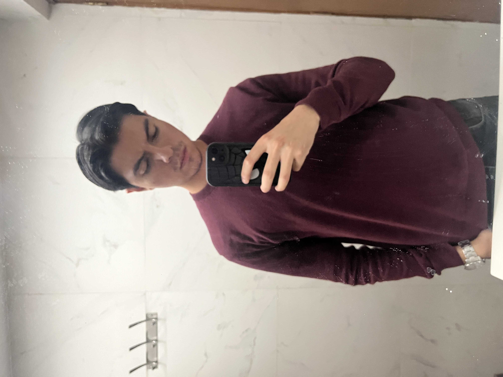

Carlo Quintanar Martínez
Soy estudiante de octavo semestre de Diseño Gráfico, apasionado por la identidad gráfica, el diseño UI/UX, la creación de carteles y el packaging. Me encanta desarrollar proyectos visuales que comuniquen de manera efectiva y memorable, explorando constantemente nuevas herramientas y tendencias en el diseño. Disfruto crear identidades visuales sólidas y atractivas, así como experimentar con diferentes estilos y técnicas. Además, tengo un gran interés en ampliar mis conocimientos en otras áreas fuera del diseño, por lo que en algún momento me gustaría estudiar una segunda carrera, ya sea en física o en psicología. Ambas disciplinas me parecen fascinantes, una por su exploración del universo y las leyes que lo rigen, y la otra por su enfoque en la mente humana y el comportamiento.
Fuera del diseño, disfruto leer todo lo que pueda, sin un género favorito, aunque la filosofía y los libros de psicología me fascinan. También me gusta hacer ejercicio, aunque lo dejé por un tiempo, ahora lo estoy retomando con más disciplina. Soy un gran fan del ajedrez; en la prepa gané varios torneos y me gustaría volver a jugar con más constancia. Me apasiona el fútbol, y mis equipos favoritos son el Real Madrid y Pumas. Además, soy un amante de la comida, especialmente de los tacos, y mis favoritos son los de asada y suadero. Tengo 15 tatuajes y planeo seguir haciéndome más. También disfruto mucho ir al cine y ver películas. En general, me encanta aprender y experimentar cosas nuevas, siempre buscando crecer y explorar diferentes áreas de interés que me ayuden a desarrollarme en distintos aspectos de mi vida.